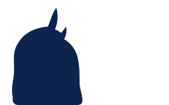

Open Tuesdays until 10 p.m.
Hagerstown's veterinarian, keeping care close to home.
Cumberland Valley Veterinary Clinic has been Hagerstown's privately owned, multi-doctor veterinary practice and pet resort for over 30 years.

📞 Call (301) 739-3121
We answer the phone. Families drive in from Funkstown, Williamsport, Boonsboro & Smithsburg — because a good vet is worth the drive.
Locally Owned Since [YEAR]·
Community-Based Care·
Comprehensive Surgical Services·
Dog & Cat Boarding·
New Patients Welcome